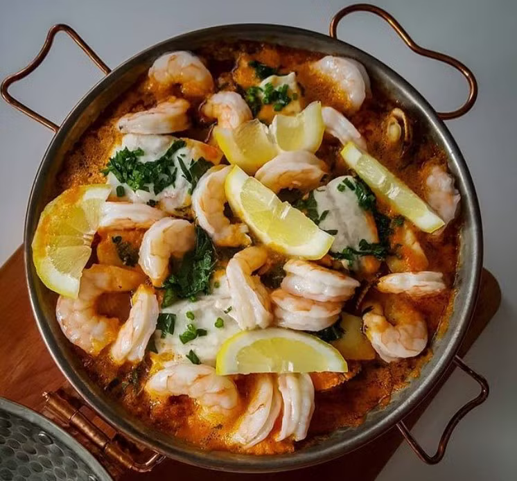

Portuguese cataplana

Description
A cataplana is an item of cookware used to prepare Portuguese seafood dishes, popular in the country's Algarve
region. The cataplana is also the name of a typical dish of Algarve region as well as a Portuguese item of cookware
used to make the dish and a method of cooking using it.
Ingredients
- Lisbon Sauce:
- 1 bell pepper
- 4 cloves of garlic
- ½ cup olive oil
- 1 tsp salt
- Base:
- 4 tomatoes
- 1 onion
- 2 cloves of garlic
- 2 bay leaves
- Parsley
- 1 pinch of chili flakes
- Olive oil
- Salt
- Broth (lobster, fish, or clam juice)
- Seafood:
- Mussels
- Clams
- Squid
- Scallops
- Cod
- Sea bass
- Shrimp
- Additional Ingredients:
- 3 cloves of garlic
- Olive oil
- 1/4 cup canned tomato paste
- 1/2 cup white wine
- Lemon
- Parsley
Steps
- Lisbon Sauce:
- Bake bell pepper in the oven until the skin darkens. Wrap in foil to steam, then clean.
- Blend the bell pepper, garlic, olive oil, and salt until smooth.
- Base:
- Sauté finely chopped tomatoes in olive oil. Add onion (cut into half rings), bay leaf, parsley, garlic, and
chili flakes. Cook for 5 minutes.
- Add the broth and simmer at high heat for 8 minutes to reduce.
- In the Cataplana:
- Sauté garlic in olive oil.
- Add clams and mussels as the first layer.
- Place squids and scallops on top of the clams and mussels.
- Pour the Lisbon sauce, white wine, and base over the layers.
- Add fish on top and sprinkle with parsley.
- Close the cataplana and cook for 10 minutes.
- Open the cataplana, add peeled shrimp and lemon slices (cut into 8 pieces), then close and cook for another
5 minutes.